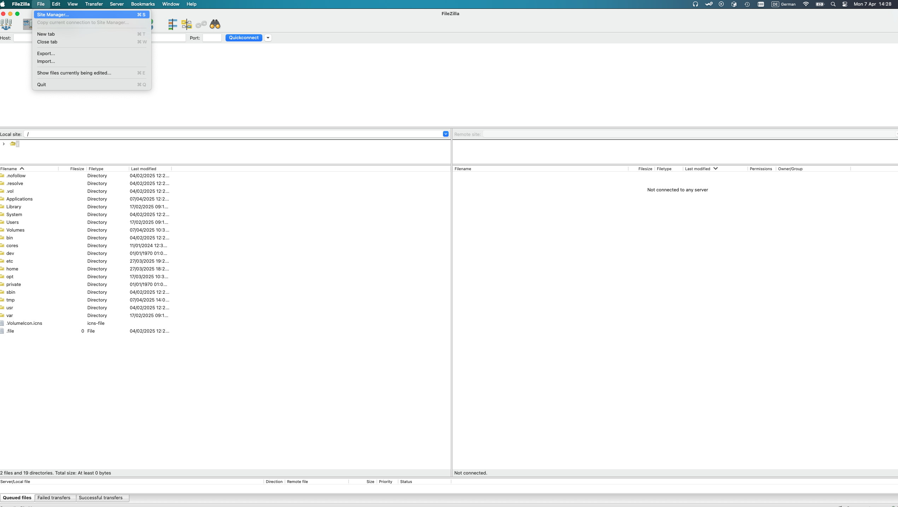
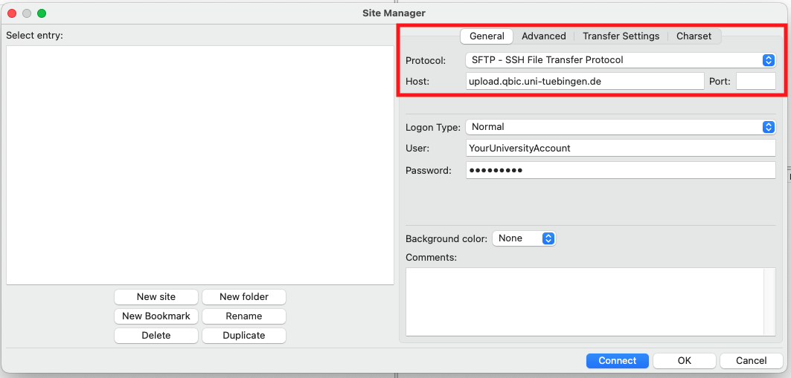
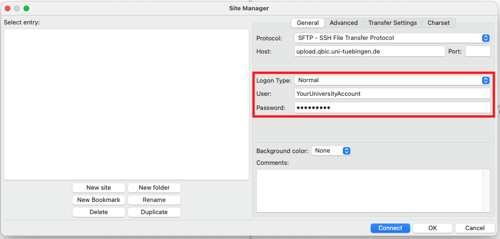
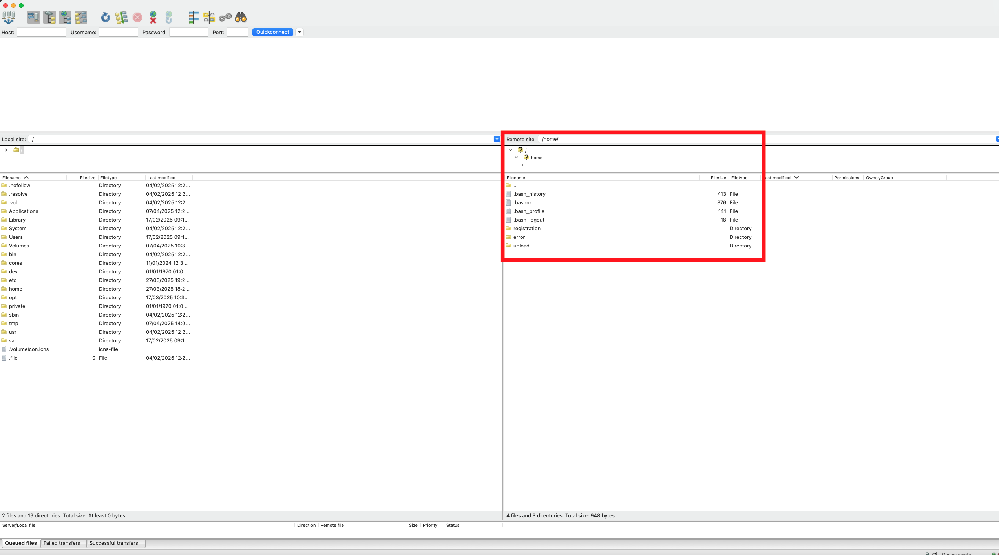
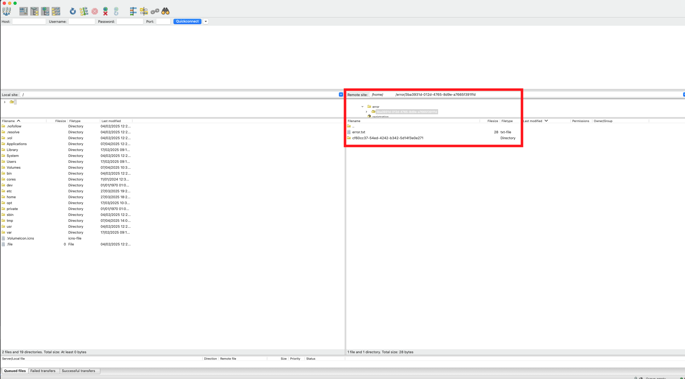

Upload Data
After creating measurements in the Data Manager, you can upload measured data to our platform. This section gives an overview on how to upload data to measurements from QBiC's Data Manager.
Prerequisites
The following is required in order to successfully execute the measurement data upload.
- A connection to the University Of Tübingen network ( e.g. using the University VPN)
- An LDAP account of the University Of Tübingen
- Access to the project of interest
- OpenSSH package or a SFTP client software (e.g. FileZilla or WinSCP)
Process Overview
graph LR
A(Prepare your data
📝) --> B(Upload your data
⇧)
B --> D{{Data upload successful?}}
D -- No --> A
D --> F("Well Done
👍")Prepare your datasets for upload
You need to prepare your datasets for us to know to which measurement to attach it.
Uploading data to a measurement is called data registration in the following section.
Folders with a given structure that are moved into the registration folder, are automatically
registered in our system.
Prepare dataset upload to a singular measurement
For every registration task, the data needs to reside in a distinct folder containing a metadata.txt file:
|- upload-example // folder name is irrelevant
|- metadata.txt // mandatory!
|- file1_1.fastq.gz // all files except for metadata.txt serve as examples
|- file1_2.fastq
|- report.pdf
|- summary.html
Warning
Ensure that the uploaded folder name and files do not have a whitespace within their name
The metadata.txt file for such an example would look like this:
MSQTEST001AL-437845761848053 file1_1.fastq.gz
MSQTEST001AL-437845761848053 file1_2.fastq
MSQTEST001AL-437845761848053 report.pdf
MSQTEST001AL-437845761848053 summary.html
The example metadata file is provided here, please keep in mind you need to adjust the measurementId and filenames to your specific upload.
Note
Ensure that measurement identifier and filename are separated by a TAB \t character and not
by spaces.
Prepare dataset upload to multiple measurements
You can upload multiple folders to distinct measurements the same way. Everything at the top level of your created folder is considered. For uploading folders, specify the name of the folders instead of a file name. Uploading only specific files from a subdirectory is not supported at the moment.
To register folders the data needs to reside within an outer folder with the following structure:
|- upload-example // folder name is irrelevant
|- metadata.txt // mandatory!
|- my-registration-batch/
|-- file1_1.fastq.gz
|-- file1_2.fastq.gz
|- my-registration-batch2/
|-- file1_1.fastq.gz
|-- file1_2.fastq.gz
Warning
Ensure that the uploaded folder name and files do not have a whitespace within their name
The folder upload-example represents an atomic registration unit and must contain the metadata.txt
with information about the measurements identifiers and the folder names to be registered
Basically this means one upload can trigger multiple registrations to distinct measurements.
The metadata.txt file for such an example would look like this:
MSQTEST001AL-437845761848053 my-registration-batch
MSQTEST002AT-437845764676875 my-registration-batch2
The example metadata file is provided here, please keep in mind you need to adjust the measurement Ids and dataset names to your specific upload.
Note
Ensure that measurement identifier and filename are separated by a TAB \t character and not
by spaces.
Upload your dataset via SFTP Client
Uploading your files to us was never this easy! SFTP is a broadly used file transfer protocol. The wide-spread use ensures that there exists many client software products that support uploading files to us. In this section we will go through the process of connecting to our server using the FileZilla client as an example.
Install SFTP client
Filezilla provides an up-to-date documentation on the installation process for each operating system. We recommend to get in contact with your local IT department should you need assistance or have chosen a different SFTP client.
Connect and upload your dataset
Open the Site Manager: You need to add the QBiC's upload server as a site to FileZilla within its site manager. To open the site manager select it from the menu or press on the highlighted icon. 
Add the upload server: In the Site Manager you can add sites to which you want to connect. For
measurement data registration, select SFTP - SSH File Transfer Protocol and
enter upload.qbic.uni-tuebingen.de into the Host field.

You can log in with your University of Tübingen credentials. Enter your university user account
into the User field.

Connect to the server: Make sure you are in the network of the University of Tübingen. You can connect to the server by pressing Connect in
the Site Manager. After connecting to the server, FileZilla shows you the contents of your home directory on the server side.

Warning
When you first log in, the server will create some folders. Do not delete these folders!
Once you have prepared your folder, upload it to your user directory on our server. Please do not
upload directly to the registration folder but stage it instead in your user directory.
Once your folder is prepared and uploaded to upload.qbic.uni-tuebingen.de, move it to
the registration folder.
Tip
You can easily drag and drop the folder via your mouse from your local filesystem to our server within filezilla
Our system will then transfer the folder and proceed with data registration.
Success
Congratulations you have uploaded your data!
Finally, you can view summarized information for your uploaded data within the raw data view of the Data Manager.
Should your files not appear check the error directory as outlined in the failed upload section
Upload your dataset via command line
The OpenSSH SFTP program is supported natively by most operating systems. In this section we will go through the process of connecting to our server using the OpenSSH SFTP program.
Install OpenSSH SFTP
Linux/Mac
Linux and Mac systems do typically have the OpenSSH package containing SFTP pre-installed. Should this not be the case, try to install the openSSH package with the package manager employed by your system. We recommend to get in contact with your local IT department should you need assistance.
Windows
Newer Windows Versions (Windows10 version 1803 and newer and Windows 11) do typically have the OpenSSH package containing SFTP preinstalled. Should this not be the case, check your system settings to see if the OpenSSH server feature is installed within the windows optional features. We recommend to get in contact with your local IT department should you need assistance.
Connect and upload your dataset
Note
This section requires basic command line knowledge of your operating system. Check the OpenSSH sftp manpage for information on how to use the sftp program.
Start by opening the command line within your operating system of choice.
Next navigate to the local working directory containing the dataset you wish to upload.
From within this directory connect to our upload server with the sftp command, replacing
sftp <your-user>@upload.qbic.uni-tuebingen.de
Warning
Keep in mind that you need to be within the university network and have a valid university account to connect to our upload server
If everything goes well, you'll be connected to the remote working directory within our upload server. You can check out the directory structure of this directory with the following ls command:
ls -ll
From there navigate to the Upload folder on the remote working directory via the cd command:
cd upload
and upload your prepared dataset from your local file system with the put command, replacing the <your-dataset>
with the directory name of your dataset:
put -r <your-dataset>
Info
Keep in mind that the put commands uploads the files and folders within the working directory of your local filesystem. You can check the content of your local working directory cia the lls command
lls
After your dataset has been successfully uploaded, you can move it to the registration folder via the rename command,
replacing the <your-dataset> with the folder name of your dataset:
rename <your-dataset> ../registration/<your-dataset>
Our system will then transfer the folder and proceed with data registration.
Success
Congratulations you have uploaded your data!
Finally, you can view summarized information for your uploaded dataset within the raw data view of the Data Manager.
Should your files not appear check the error directory as outlined in the failed upload section
Handle failed uploads
Uploading data to a measurement can fail in certain cases. When an upload fails, a folder is created
in /home/<your-user>/error.
Info
A failed upload will be contained within a directory named after a universally unique identifier to ensure data integrity during the registration process within our system.

In this new folder, you can find an error.txt file describing the error, and the data you tried to upload.
You can then try to fix the error. To retry the upload of the fixed folder, move it to the registration folder again.